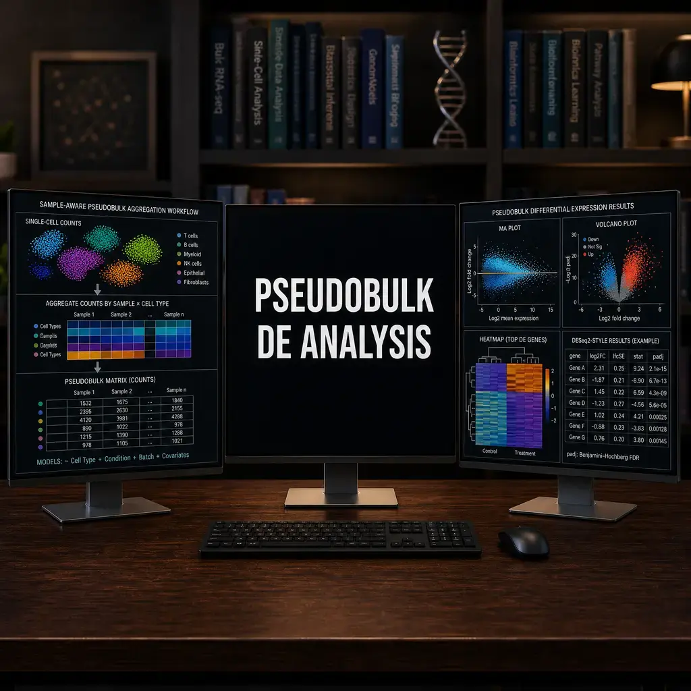
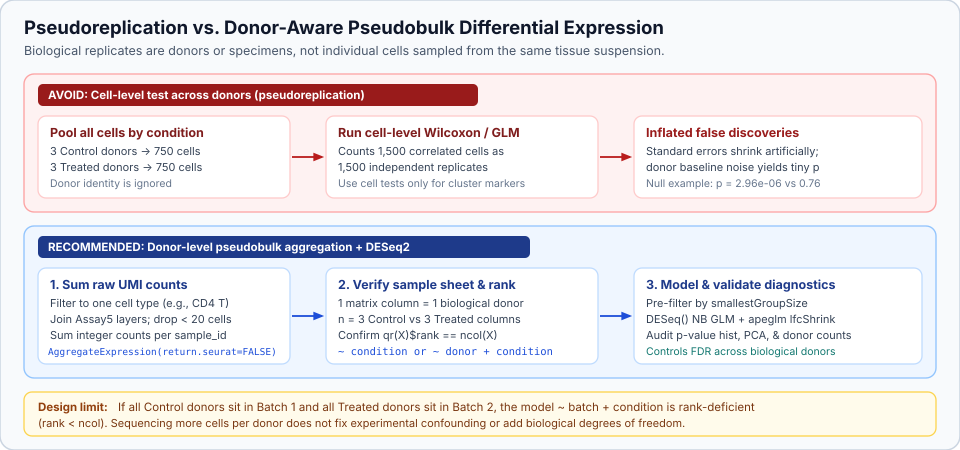
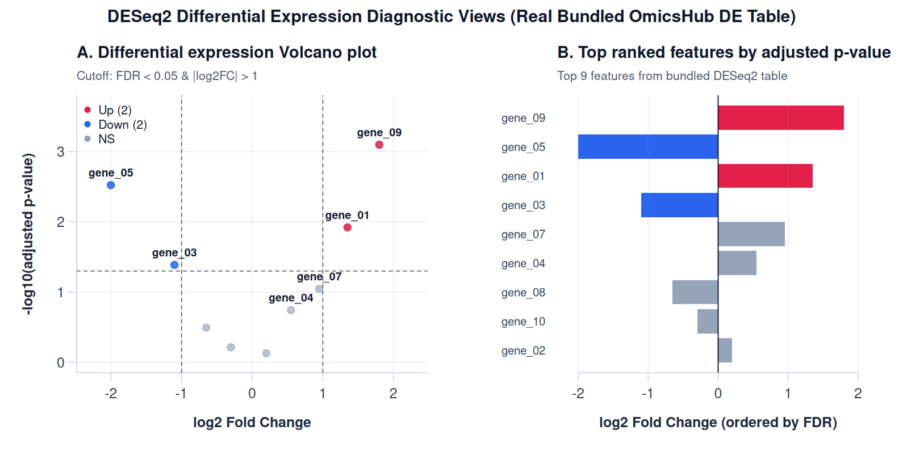

Pseudobulk Differential Expression for scRNA-seq
Nasir Mahmood Abbasi, PhD
Bioinformatics Educator

Comparing gene expression between conditions in single-cell RNA-seq fails when cells from the same donor are treated as independent replicates. Pseudobulk differential expression solves this by summing raw unique molecular identifier (UMI) counts per biological sample and cell type, verifying a full-rank design matrix, and fitting a negative-binomial model in DESeq2.
Format: Advanced template (25-30 minutes). You will learn to:
- Demonstrate in base R why cell-level tests cause pseudoreplication and verify full-rank design matrices.
- Aggregate raw integer UMI counts per
(sample_id, cell_type)in Seurat v5 while handling splitAssay5layers, ID rewriting, and low-cell-count donors. - Fit unpaired (
~ condition) or paired (~ donor + condition)DESeq2models, shrink fold changes withapeglm, and audit p-value histograms, PCA, and per-donor counts.
Prerequisites and inputs: Complete scRNA-seq Downstream Analysis and Experimental Design and Batch Effects, or bring an annotated Seurat object with raw integer RNA counts plus sample_id, condition, and cell_type metadata. Section 1 runs in base R with no extra packages; Sections 2-6 form an adaptable template (verified on Ubuntu with R 4.3.3, Seurat 5.0.1, and DESeq2 1.42.1 on 5,294 CD4 T cells across 8 donors from Kang et al., GSE96583).
1. Why cell-level tests inflate false positives
Cells from one patient, mouse, or organoid share genetics, tissue dissociation stress, sequencing run, and ambient RNA. They are correlated subsamples of one biological replicate (experimental unit), not independent observations (Squair et al., 2021). Treating 1,500 cells from 6 donors as 1,500 independent data points is pseudoreplication: it understates donor-to-donor variance and turns baseline noise into tiny p-values.
Pseudobulk aggregation sums raw counts across cells of the same biological sample and cell type, producing one count column per sample for bulk negative-binomial models such as DESeq2, edgeR (glmQLFit), or muscat (Crowell et al., 2020).

Run this standalone base-R simulation to see pseudoreplication under a true null hypothesis (zero group difference) alongside a design-matrix rank check:
set.seed(123)
donors <- paste0("D", 1:6)
cond <- rep(c("Control", "Treated"), each = 3)
# Same null distribution for all 6 donors (zero true condition effect)
donor_means <- round(rlnorm(6, meanlog = log(3), sdlog = 0.45), 2)
cell_counts <- unlist(lapply(donor_means, function(mu) rpois(250, lambda = mu)))
cell_cond <- rep(cond, each = 250)
cell_donor <- rep(donors, each = 250)
# 1) Cell-level Wilcoxon treats 1,500 cells as independent replicates
cell_p <- wilcox.test(cell_counts[cell_cond == "Treated"],
cell_counts[cell_cond == "Control"])$p.value
# 2) Pseudobulk sums counts within each donor and tests n = 3 vs 3 donors
pb_sums <- tapply(cell_counts, cell_donor, sum)[donors]
donor_p <- t.test(pb_sums[cond == "Treated"], pb_sums[cond == "Control"])$p.value
cat("Donor sums:", paste(names(pb_sums), pb_sums, sep = "=", collapse = ", "), "\n")
cat(sprintf("Cell-level Wilcoxon p (n = 750 vs 750 cells): %.3e\n", cell_p))
cat(sprintf("Donor-level Welch t p (n = 3 vs 3 donors): %.4f\n", donor_p))
# 3) Check design-matrix full rank before fitting DESeq2
confounded <- data.frame(
batch = factor(c("B1", "B1", "B1", "B2", "B2", "B2")),
condition = factor(cond)
)
X_conf <- model.matrix(~ batch + condition, data = confounded)
paired <- data.frame(
donor = factor(rep(paste0("D", 1:4), each = 2)),
condition = factor(rep(c("ctrl", "stim"), times = 4))
)
X_pair <- model.matrix(~ donor + condition, data = paired)
cat(sprintf("Confounded (~ batch + condition): ncol=%d, rank=%d, full_rank=%s\n",
ncol(X_conf), qr(X_conf)$rank, qr(X_conf)$rank == ncol(X_conf)))
cat(sprintf("Paired (~ donor + condition): ncol=%d, rank=%d, full_rank=%s\n",
ncol(X_pair), qr(X_pair)$rank, qr(X_pair)$rank == ncol(X_pair)))Observed output (executed locally with R 4.6.1):
Donor sums: D1=587, D2=651, D3=1526, D4=754, D5=773, D6=1644
Cell-level Wilcoxon p (n = 750 vs 750 cells): 2.955e-06
Donor-level Welch t p (n = 3 vs 3 donors): 0.7639
Confounded (~ batch + condition): ncol=3, rank=2, full_rank=FALSE
Paired (~ donor + condition): ncol=5, rank=5, full_rank=TRUEWith zero true treatment difference, pooling 1,500 cells returned p = 2.955e-06, while testing the 6 donor sums returned p = 0.7639. Below it, qr(X)$rank == ncol(X) catches batch confounding upfront: if all controls sit in B1 and all treated samples sit in B2, rank = 2 < ncol = 3.
- Cluster markers within one dataset: Seurat
FindMarkers()(Wilcoxon) is appropriate for distinguishing cell types within a tissue. - Condition comparisons across donors: Sum raw counts per donor and fit
DESeq2,edgeR::glmQLFit,muscat, or PythonPyDESeq2(aim for at least 3 biological replicates per group). - Repeated measures on the same donors: Keep all matched conditions and block on donor (
~ donor + condition).
2. Prepare the sample-level input contract
Verify four items before running the Seurat template:
- Biological
sample_id: Use one stable ID per independent sample (never a barcode or sequencing lane). For~ condition, eachsample_idmaps to one condition; for paired cohorts, keep unique library IDs insample_idplus a shareddonorcolumn. - Raw integer counts:
DESeq2computes median-of-ratios size factors and negative-binomial dispersions from unnormalized counts. Never passdata(log-normalized) orscale.data. - Joined
Assay5layers: Merged Seurat v5 objects often retain splitcounts.<sample>layers; callJoinLayers()before aggregating. - Local paths and versions: Replace
/data/seurat_objects/pbmc_processed.rdsand the illustrativeHealthy/CTCLlabels with your own file and metadata levels, and recordR.version.string,packageVersion("Seurat"),packageVersion("DESeq2"), andpackageVersion("apeglm").
3. Aggregate raw UMI counts within the target cell type
Seurat's AggregateExpression() rewrites underscores (_) to hyphens (-) and prepends g to numeric labels, while sparse dgCMatrix objects can fail on CSV export. The script below uses temporary sample1..N codes during aggregation, restores original IDs afterward, drops pseudobulks with fewer than 20 cells, and writes dense integer counts plus an aligned sample sheet.
library(Seurat)
library(DESeq2)
library(apeglm)
library(ggplot2)
library(dplyr)
library(tibble)
library(readr)
# Replace with your local annotated Seurat RDS file and metadata labels.
seurat_obj <- readRDS("/data/seurat_objects/pbmc_processed.rds")
if (!inherits(seurat_obj, "Seurat")) stop("Input RDS must contain a Seurat object")
if (!"RNA" %in% SeuratObject::Assays(seurat_obj)) stop("Input object must contain an RNA assay")
meta <- seurat_obj[[]]
required <- c("sample_id", "condition", "cell_type")
if (!all(required %in% colnames(meta))) {
stop("Metadata must contain: ", paste(required, collapse = ", "))
}
if (!identical(rownames(meta), colnames(seurat_obj))) {
stop("Cell metadata row names must match object cell names")
}
cell_type_of_interest <- "CD4 T"
keep_cells <- rownames(meta)[!is.na(meta$cell_type) &
meta$cell_type == cell_type_of_interest]
if (!length(keep_cells)) stop("No cells match the requested cell type")
obj_ct <- subset(seurat_obj, cells = keep_cells)
# Seurat v5: join split counts layers (e.g., counts.sample1, counts.sample2) if present.
if (inherits(obj_ct[["RNA"]], "Assay5") &&
length(SeuratObject::Layers(obj_ct, assay = "RNA", search = "^counts")) > 1L) {
obj_ct[["RNA"]] <- SeuratObject::JoinLayers(obj_ct[["RNA"]])
}
# Drop cells missing sample/condition labels, then audit cell counts per sample.
meta_ct <- obj_ct[[]]
valid <- !is.na(meta_ct$sample_id) & !is.na(meta_ct$condition)
obj_ct <- subset(obj_ct, cells = rownames(meta_ct)[valid])
meta_ct <- obj_ct[[]]
if (!nrow(meta_ct)) stop("No cells remain with sample and condition labels")
cells_per_sample <- table(as.character(meta_ct$sample_id))
print(cells_per_sample)
min_cells_per_pb <- 20L
keep_samples <- names(cells_per_sample)[cells_per_sample >= min_cells_per_pb]
if (length(keep_samples) < 4L) {
stop("Fewer than 4 samples meet min_cells_per_pb = ", min_cells_per_pb)
}
obj_ct <- subset(obj_ct, cells = rownames(meta_ct)[as.character(meta_ct$sample_id) %in% keep_samples])
meta_ct <- obj_ct[[]]
condition_per_sample <- tapply(as.character(meta_ct$condition),
as.character(meta_ct$sample_id),
function(x) length(unique(x)))
if (any(condition_per_sample != 1L)) {
stop("Each sample_id must map to exactly one condition in this unpaired template")
}
# Temporary codes prevent Seurat from rewriting underscores or numeric IDs.
sample_ids <- unique(as.character(meta_ct$sample_id))
if (any(!nzchar(trimws(sample_ids)))) stop("sample_id must contain non-empty biological sample IDs")
aggregation_codes <- paste0("sample", seq_along(sample_ids))
obj_ct$pseudobulk_group <- aggregation_codes[match(as.character(meta_ct$sample_id), sample_ids)]
# Sum raw counts within each biological sample (return.seurat = FALSE returns count matrices).
pb_raw <- AggregateExpression(
obj_ct, assays = "RNA", group.by = "pseudobulk_group", return.seurat = FALSE
)$RNA
if (!setequal(colnames(pb_raw), aggregation_codes)) {
stop("Aggregated columns do not match temporary sample codes")
}
colnames(pb_raw) <- sample_ids[match(colnames(pb_raw), aggregation_codes)]
# Coerce safely to a dense integer matrix after verifying non-negative integer counts.
pb <- as.matrix(pb_raw)
if (any(!is.finite(pb)) || any(pb < 0) || any(abs(pb - round(pb)) > 1e-8)) {
stop("Aggregated RNA assay does not contain finite, non-negative integers; confirm raw counts")
}
storage.mode(pb) <- "integer"
# Align sample-level metadata (preserve 'donor' if present for paired designs).
meta_cols <- intersect(c("sample_id", "condition", "donor", "batch"), colnames(meta_ct))
coldata <- meta_ct[!duplicated(meta_ct$sample_id), meta_cols, drop = FALSE]
coldata <- coldata[match(colnames(pb), as.character(coldata$sample_id)), , drop = FALSE]
stopifnot(identical(as.character(coldata$sample_id), colnames(pb)))
rownames(coldata) <- coldata$sample_id
coldata$condition <- factor(coldata$condition)
if (nlevels(coldata$condition) != 2L) stop("This two-group contrast expects exactly two conditions")
# Save integer summed counts and aligned sample sheet for reproducibility.
dir.create("output/pseudobulk", recursive = TRUE, showWarnings = FALSE)
write_csv(as.data.frame(pb) %>% rownames_to_column("gene"),
"output/pseudobulk/cd4_counts.csv")
write_csv(coldata %>% rownames_to_column("sample"),
"output/pseudobulk/sample_metadata.csv")cells_per_sample and table(coldata$condition). Each column in pb must represent one biological sample, with at least 2 (ideally 3 or more) replicates per condition and no batch confounding.Smoke-test the saved pseudobulk files
Confirm the exported CSVs contain valid gene names, matching sample columns, integer counts, and at least two samples per group:
counts_file <- readr::read_csv("output/pseudobulk/cd4_counts.csv", show_col_types = FALSE)
samples_file <- readr::read_csv(
"output/pseudobulk/sample_metadata.csv",
col_types = readr::cols(sample_id = readr::col_character(), .default = readr::col_guess()),
show_col_types = FALSE
)
stopifnot(
"gene" %in% names(counts_file),
all(c("sample", "sample_id", "condition") %in% names(samples_file)),
all(table(samples_file$condition) >= 2L)
)
count_samples <- names(counts_file)[names(counts_file) != "gene"]
stopifnot(identical(count_samples, samples_file$sample_id))
count_values <- as.matrix(counts_file[count_samples])
stopifnot(
all(is.finite(count_values)),
all(count_values >= 0),
all(abs(count_values - round(count_values)) < 1e-8)
)
cat(sprintf("Verified %d genes across %d pseudobulk samples.\n", nrow(count_values), ncol(count_values)))4. Pre-filter, fit DESeq2, and shrink noisy fold changes
- Pre-filter by
smallestGroupSize: Following the DESeq2 vignette, retain genes with count >= 10 in at leastsmallest_groupsamples to drop uninformative rows and stabilize dispersion fits. - Explicit reference level:
relevel(coldata$condition, ref = "Healthy")makes positivelog2FoldChangemean higher inCTCLthanHealthy. apeglmLFC shrinkage: Raw fold changes inflate at low counts.lfcShrink(..., type = "apeglm")(Zhu et al., 2019) shrinks noisy estimates for ranking and plots while preserving Waldpvalueandpadj. It requires a coefficient name fromresultsNames(dds); for arbitrary pairwise contrasts without releveling, usetype = "ashr"withcontrast.
# Pre-filter: require count >= 10 in at least smallestGroupSize samples (DESeq2 vignette)
smallest_group <- min(table(coldata$condition))
keep_gene <- rowSums(pb >= 10L) >= smallest_group
if (!any(keep_gene)) stop("No genes pass the smallestGroupSize count filter")
counts_for_de <- pb[keep_gene, , drop = FALSE]
# Check design matrix rank before fitting DESeq2
coldata$condition <- relevel(coldata$condition, ref = "Healthy")
X_design <- model.matrix(~ condition, data = coldata)
if (qr(X_design)$rank < ncol(X_design)) {
stop("Design matrix is rank-deficient; check for confounded or single-level covariates")
}
dds <- DESeqDataSetFromMatrix(
countData = counts_for_de,
colData = coldata,
design = ~ condition
)
dds <- DESeq(dds)
print(resultsNames(dds))
# Unshrunken Wald test results (alpha = 0.05 optimizes independent filtering for FDR < 0.05)
res <- results(dds, contrast = c("condition", "CTCL", "Healthy"), alpha = 0.05)
summary(res)
# Empirical-Bayes LFC shrinkage for ranking, GSEA, and MA/volcano plots
coef_name <- "condition_CTCL_vs_Healthy"
stopifnot(coef_name %in% resultsNames(dds))
res_shrunk <- lfcShrink(dds, coef = coef_name, res = res, type = "apeglm")
res_ordered <- res_shrunk[order(res_shrunk$padj, na.last = TRUE), ]
dir.create("output/deseq2", recursive = TRUE, showWarnings = FALSE)
write.csv(as.data.frame(res_ordered), "output/deseq2/cd4_DE_results.csv")Example output (illustrative resultsNames(dds) and summary(res) format, not run on the placeholder path):
[1] "Intercept" "condition_CTCL_vs_Healthy"
out of 11482 with nonzero total read count
adjusted p-value < 0.05
LFC > 0 (up) : 142, 1.2%
LFC < 0 (down) : 98, 0.85%
outliers [1] : 14, 0.12%
low counts [2] : 2210, 19%
(mean count < 18)
[1] see 'cooksCutoff' argument of ?results
[2] see 'independentFiltering' argument of ?resultsBoth outliers [1] (Cook's distance) and low counts [2] (independent filtering below mean count 18 here) receive padj = NA rather than penalizing the multiple-testing denominator.
Paired donor extension (~ donor + condition)
For matched cohorts such as Kang et al. GSE96583 (8 donors measured in ctrl and IFN-beta stim), adding donor absorbs baseline inter-individual variation and surfaces canonical interferon-stimulated genes (ISG15, IFI6, IFIT1, IFIT3, MX1, OAS1):
# Assumes coldata includes a 'donor' column (one donor ID shared across paired samples)
stopifnot("donor" %in% colnames(coldata))
coldata_paired <- transform(
coldata,
donor = factor(donor),
condition = relevel(factor(condition), ref = "ctrl")
)
X_paired <- model.matrix(~ donor + condition, data = coldata_paired)
stopifnot(qr(X_paired)$rank == ncol(X_paired))
dds_paired <- DESeqDataSetFromMatrix(
countData = pb[rowSums(pb >= 10L) >= min(table(coldata_paired$condition)), , drop = FALSE],
colData = coldata_paired,
design = ~ donor + condition
)
dds_paired <- DESeq(dds_paired)
res_paired <- results(dds_paired, name = "condition_stim_vs_ctrl", alpha = 0.05)
res_paired_shrunk <- lfcShrink(dds_paired, coef = "condition_stim_vs_ctrl",
res = res_paired, type = "apeglm")featureCounts or tximport) enter at DESeqDataSetFromMatrix() above. In Python, PyDESeq2 (DeseqDataSet and DeseqStats) runs the equivalent model on pseudobulk tables from AnnData.5. Validate the model visually
Check four diagnostic plots before interpreting candidate genes:
- Raw p-value histogram: Expect a flat uniform plateau across 0.1-1.0 with a spike near 0. A hill- or U-shaped histogram indicates unmodeled batch/donor structure or mis-specified variance.
- VST PCA: Use
vst(dds, blind = TRUE)when at least 1,000 rows exceed mean normalized count 5, or fall back tovarianceStabilizingTransformation(dds, blind = TRUE). Color bycondition,batch, anddonor; VST stabilizes variance for visualization and does not remove batch effects. - Shrunken MA plot: Run
plotMA(res_shrunk)to confirm low-baseMeanfold changes compress cleanly around zero. - Volcano and per-donor counts: Pair the volcano plot with
plotCounts(dds, gene = top_gene, intgroup = "condition")so one outlier donor cannot drive a false conclusion.

deseq2_results.tsv, 10 synthetic features): (A) Volcano view plotting -log10(padj) vs. log2FoldChange at FDR < 0.05 and |log2FC| > 1, paired with (B) the 9 features with non-missing padj ranked by FDR (gene_06 has padj = NA).dir.create("output/plots", recursive = TRUE, showWarnings = FALSE)
# 1) P-value histogram: expect flat uniform plateau + spike near 0
png("output/plots/pvalue_hist.png", width = 700, height = 500)
hist(res$pvalue[!is.na(res$pvalue)], breaks = 20, col = "#CBD5E1",
main = "Raw Wald p-value distribution", xlab = "p-value")
dev.off()
# 2) Sample PCA using variance-stabilized counts (handles < 1,000 qualifying genes safely)
n_vst <- sum(rowMeans(counts(dds, normalized = TRUE)) > 5)
vsd <- if (n_vst >= 1000L) vst(dds, blind = TRUE) else varianceStabilizingTransformation(dds, blind = TRUE)
pca_plot <- plotPCA(vsd, intgroup = intersect(c("condition", "batch", "donor"), colnames(coldata))) +
ggtitle("Pseudobulk samples: variance-stabilized counts")
ggsave("output/plots/pca.png", pca_plot, width = 6, height = 4, bg = "white")
# 3) MA plot using apeglm-shrunken fold changes
png("output/plots/ma_shrunk.png", width = 800, height = 600)
plotMA(res_shrunk, ylim = c(-4, 4), main = "CTCL vs Healthy (apeglm-shrunken LFC)")
dev.off()
# 4) Volcano plot (-log10 raw pvalue on y-axis; color encodes padj < 0.05 and |LFC| > 1)
# Compare with Panel A above, which plots -log10(padj) when ranking final hits.
res_df <- as.data.frame(res_shrunk) %>% rownames_to_column("gene") %>%
mutate(neg_log10_p = -log10(pmax(pvalue, .Machine$double.xmin)),
called = !is.na(padj) & padj < 0.05 & abs(log2FoldChange) > 1)
volcano <- ggplot(res_df, aes(log2FoldChange, neg_log10_p, color = called)) +
geom_point(alpha = 0.6) +
geom_vline(xintercept = c(-1, 1), linetype = "dashed", color = "grey50") +
labs(title = "CTCL vs Healthy (pseudobulk CD4 T)", x = "Shrunken log2 fold change", y = "-log10(p-value)") +
theme_minimal()
ggsave("output/plots/volcano.png", volcano, width = 6, height = 4, bg = "white")
# 5) Per-donor normalized counts for the top hit (guards against single-donor outliers)
top_gene <- rownames(res_ordered)[1]
if (!is.na(top_gene)) {
png("output/plots/top_gene_counts.png", width = 650, height = 450)
plotCounts(dds, gene = top_gene, intgroup = "condition", main = paste("Per-donor counts:", top_gene))
dev.off()
}6. Interpret DESeq2 columns and avoid common traps
baseMean: Mean normalized count across samples; low values carry higher variance.log2FoldChange: Estimated log2 ratio for the active contrast (here positive = higher inCTCL).pvalueandpadj: Raw Wald p-value and Benjamini-Hochberg FDR. A missingpadj = NAoccurs either because independent filtering dropped a low-baseMeanrow (numericpvaluepreserved) or because Cook's distance flagged a single-sample outlier when replicates per group are 3-6 (bothpvalueandpadjset toNA; at 7+ replicates per group, DESeq2 replaces outliers with a trimmed mean).- Expression vs. abundance: Pseudobulk tests within-cell-type expression changes across donors; it does not test cell-proportion shifts (use
propeller,scCODA, ormiloR).
Troubleshoot common errors
| Error or symptom | Root cause | Exact fix |
|---|---|---|
some values in assay are not integers | Log-normalized (data) or scaled counts were supplied instead of raw UMIs. | Join split Assay5 layers, use AggregateExpression(..., return.seurat = FALSE)$RNA, and verify integers before storage.mode(pb) <- "integer". |
type='apeglm' does not support contrast | apeglm requires coef from resultsNames(dds), not a contrast vector. | Set relevel(dds$condition, ref = ...) before DESeq(dds) and pass coef, or use type = "ashr" with contrast. |
less than 'nsub' rows with mean normalized count > 5 | Fewer than 1,000 genes passed filtering or exceeded mean count 5. | Use varianceStabilizingTransformation(dds, blind = TRUE) or lower nsub. |
the model matrix is not full rank | Condition is collinear with batch/donor, or a factor has one level. | Check qr(model.matrix(design, coldata))$rank == ncol(...) and remove collinear terms. |
Many tiny padj or U-shaped p-histogram | Cells (not donors) are columns, or a batch/donor covariate is missing. | Confirm ncol(pb) equals biological sample count and add blocking where full rank allows. |
| Reversed fold-change sign | Reference factor level or contrast order is flipped. | Check levels(coldata$condition) and contrast = c("condition", "Numerator", "Reference"). |
7. Check your understanding
Quick diagnostic check
1. In a 4 vs 4 donor comparison, Gene X has pvalue = 0.002, padj = NA and Gene Y has pvalue = NA, padj = NA. Why?
Show solution
Gene X fell below DESeq2's independent-filtering cutoff (metadata(res)$filterThreshold), keeping its raw pvalue while masking padj. Gene Y triggered Cook's distance outlier flagging from one extreme sample (at 4 replicates per group, DESeq2 masks both pvalue and padj instead of imputing).
2. A study profiles 8,000 CD4 T cells from 2 responders (Batch 1) and 2 non-responders (Batch 2), yielding 1,400 genes at p_val_adj < 1e-10 via FindMarkers(). Can pseudobulk DESeq2 with ~ batch + condition rescue the comparison?
Show solution
No. The 1,400 cell-level hits are pseudoreplication, and after pseudobulk aggregation responder status and batch remain 100% collinear (rank = 2 < ncol = 3). New balanced replicates across batches are required.
8. Recap, next steps, and references
Summary checklist: aggregate raw integer counts per biological sample and cell type (dropping < 20-cell pseudobulks); confirm full design-matrix rank; apply smallestGroupSize filtering and apeglm shrinkage; and inspect the p-value histogram, VST PCA, MA plot, and per-donor counts.
Next steps on The Omics Hub:
- Single-Cell RNA-seq Downstream Analysis: choose between pseudobulk DE, abundance testing (
propeller/miloR), trajectories, and regulons. - Experimental Design and Batch Effects: evaluate batch-condition separability and balanced study design.
- Statistics for Bioinformatics: review hypothesis testing and Benjamini-Hochberg FDR control.
- scRNA-seq Quality Control: verify post-integration mixing before annotating clusters for DE.
References
- Squair JW, Gautier M, Kathe C, et al. (2021). Confronting false discoveries in single-cell differential expression. Nature Communications, 12, 5692. doi:10.1038/s41467-021-25960-2
- Crowell HL, Soneson C, Germain PL, et al. (2020). muscat detects subpopulation-specific state transitions from multi-sample multi-condition single-cell transcriptomics data. Nature Communications, 11, 6077. doi:10.1038/s41467-020-19894-4
- Love MI, Huber W, Anders S (2014). Moderated estimation of fold change and dispersion for RNA-seq data with DESeq2. Genome Biology, 15(12), 550. doi:10.1186/s13059-014-0550-8
- Zhu A, Ibrahim JG, Love MI (2019). Heavy-tailed prior distributions for sequence count data: removing the noise and preserving large differences. Bioinformatics, 35(12), 2084-2092 (
apeglm). doi:10.1093/bioinformatics/bty895 - Kang HM, Subramaniam M, Targ S, et al. (2018). Multiplexed droplet single-cell RNA-sequencing using natural genetic variation. Nature Biotechnology, 36, 89-94 (
GSE96583). doi:10.1038/nbt.4042 - Official documentation: Seurat AggregateExpression reference, Seurat DE vignette, DESeq2 Bioconductor vignette, and PyDESeq2 pipeline documentation.
Before analysis, record the versions actually used in your R session with R.version.string, packageVersion("Seurat"), and packageVersion("DESeq2"); the example versions above are not a substitute for your environment record. Re-check package-specific behavior against the official documentation. If a command does not work or you find an error, please report it through the Contact page.
Author: Nasir Mahmood Abbasi, PhD - Category: Single-Cell RNA-seq